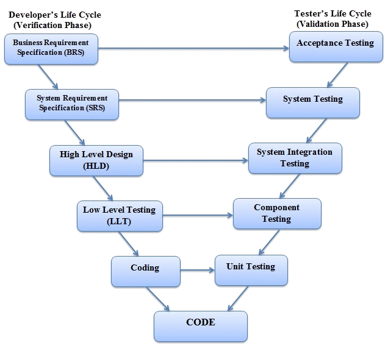

V-Shape arendusmudel on arendusmudel, kus igat etappi testitakse, et kõik töötaks
Igal osal, mida planeeritakse on üks peegeldatud osa, kus veendutakse, et kõik korras oleks.
Seda nimetatakse V-Shapeiks, sest igal etapil on teisel pool sama testimisetapp.

| Head | Halvad |
|---|---|
| Kindlad, defineeritud sammud | Pidev testimine võib projekti aeglustada |
| Lihtne probleeme varem leida | Raske plaani poole pealt muuta |
| Lihtne projekti jälgida | Pead kõike algusest teadma |
| Testimine tuleb pärast koodi kirjutamist, mitte selle ajal |